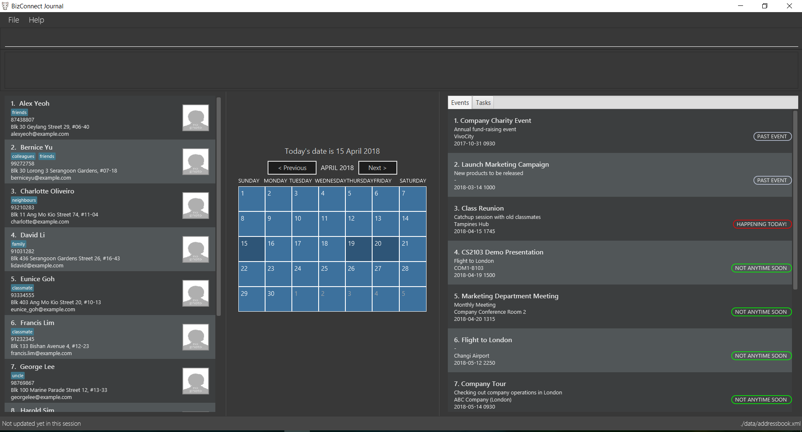

By: CS2103JAN2018 T15-B4 Since: Jan 2018 Licence: MIT
- 1. Introduction
- 2. Quick Start
- 3. Features
- 3.1. Viewing help :
help - 3.2. Adding a person:
add - 3.3. Listing all persons :
list - 3.4. Sorting all persons :
sort - 3.5. Editing a person :
edit - 3.6. Locating persons by name:
find - 3.7. Exporting addressbook data:
export - 3.8. Deleting a person:
delete - 3.9. Deleting a person by name:
deletebyname - 3.10. Selecting a person :
select - 3.11. Listing entered commands :
history - 3.12. Undoing previous command :
undo - 3.13. Redoing the previously undone command :
redo - 3.14. Clearing all entries :
clear - 3.15. Exiting the program :
exit - 3.16. Saving the data
- 3.17. Encrypting data files
[coming in v2.0] - 3.18. Adding a task:
task-add[coming in v2.0] - 3.19. Listing all tasks:
task-list[coming in v2.0] - 3.20. Sorting all tasks by priority:
task-sort[coming in v2.0] - 3.21. Deleting a task:
task-delete[coming in v2.0] - 3.22. Converting from one currency to another:
convert[coming in v2.0] - 3.23. Locating persons by tag:
find -t[coming in v2.0] - 3.24. Locating persons by phone:
find -p[coming in v2.0] - 3.25. Profile picture feature
[coming in v2.0] - 3.26. Calendar view feature to check summarised schedule for the month
[coming in v2.0]
- 3.1. Viewing help :
- 4. FAQ
- 5. Command Summary
1. Introduction
BizConnect Journal is catered towards businessmen users and travelers who prefer to use a desktop app for managing contacts. More importantly, BCJ is optimized for those who prefer to work with a Command Line Interface (CLI) while still having the benefits of a Graphical User Interface (GUI). If you can type fast, BCJ can get your contact management tasks done faster than traditional GUI apps. Interested? Jump to the Section 2, “Quick Start” to get started. Enjoy!
2. Quick Start
-
Ensure you have Java version
1.8.0_60or later installed in your Computer.Having any Java 8 version is not enough.
This app will not work with earlier versions of Java 8. -
Download the latest
addressbook.jarhere. -
Copy the file to the folder you want to use as the home folder for your Address Book.
-
Double-click the file to start the app. The GUI should appear in a few seconds.
 -
Type the command in the command box and press Enter to execute it.
e.g. typinghelpand pressing Enter will open the help window. -
Some example commands you can try:
-
list: lists all contacts -
addn/John Doe p/98765432 e/johnd@example.com a/John street, block 123, #01-01: adds a contact namedJohn Doeto the Address Book. -
delete3: deletes the 3rd contact shown in the current list -
exit: exits the app
-
-
Refer to Section 3, “Features” for details of each command.
3. Features
Command Format
-
Words in
UPPER_CASEare the parameters to be supplied by the user e.g. inadd n/NAME,NAMEis a parameter which can be used asadd n/John Doe. -
Items in square brackets are optional e.g
n/NAME [t/TAG]can be used asn/John Doe t/friendor asn/John Doe. -
Items with
… after them can be used multiple times including zero times e.g.[t/TAG]…can be used ast/friend,t/friend t/familyetc. -
Parameters can be in any order e.g. if the command specifies
n/NAME p/PHONE_NUMBER,p/PHONE_NUMBER n/NAMEis also acceptable.
3.1. Viewing help : help
Format: help
3.2. Adding a person: add
Adds a person to the address book
Format: add n/NAME p/PHONE_NUMBER e/EMAIL a/ADDRESS [t/TAG]…
| A person can have any number of tags (including 0) |
Examples:
-
add n/John Doe p/98765432 e/johnd@example.com a/John street, block 123, #01-01 -
add n/Betsy Crowe t/friend e/betsycrowe@example.com a/Newgate Prison p/1234567 t/criminal
3.3. Listing all persons : list
Shows a list of all persons in the address book.
Format: list
3.4. Sorting all persons : sort
Sorts all persons in the address book alphabetically by name in ascending order and list them.
Format: sort
3.5. Editing a person : edit
Edits an existing person in the address book.
Format: edit INDEX [n/NAME] [p/PHONE] [e/EMAIL] [a/ADDRESS] [t/TAG]…
Examples:
-
edit 1 p/91234567 e/johndoe@example.com
Edits the phone number and email address of the 1st person to be91234567andjohndoe@example.comrespectively. -
edit 2 n/Betsy Crower t/
Edits the name of the 2nd person to beBetsy Crowerand clears all existing tags.
3.6. Locating persons by name: find
Finds persons whose names contain any of the given keywords.
Format: find KEYWORD [MORE_KEYWORDS]
Examples:
-
find John
ReturnsjohnandJohn Doe -
find Betsy Tim John
Returns any person having namesBetsy,Tim, orJohn
3.7. Exporting addressbook data: export
Exports addressbook data into an XML file.
Format: export FILEPATH [MORE_KEYWORDS]
Examples:
-
export C:\Users\John Doe\Documents\addressbook.xml
Creates XML file in the user-defined filepath -
exp addressbook.xml
Creates XML file in the main folder of the Addressbook
3.8. Deleting a person: delete
Deletes the specified person from the address book.
Format: delete INDEX
Examples:
-
list
delete 2
Deletes the 2nd person in the address book. -
find Betsy
delete 1
Deletes the 1st person in the results of thefindcommand.
3.9. Deleting a person by name: deletebyname
Deletes the specified person from the address book by name.
Format: delete NAME
Examples:
-
deletebyname
john doe
Deletes the contact whose name matches john doe.
3.10. Selecting a person : select
Selects the person identified by the index number used in the last person listing.
Format: select INDEX
Examples:
-
list
select 2
Selects the 2nd person in the address book. -
find Betsy
select 1
Selects the 1st person in the results of thefindcommand.
3.11. Listing entered commands : history
Lists all the commands that you have entered in reverse chronological order.
Format: history
|
Pressing the ↑ and ↓ arrows will display the previous and next input respectively in the command box. |
3.12. Undoing previous command : undo
Restores the address book to the state before the previous undoable command was executed.
Format: undo
|
Undoable commands: those commands that modify the address book’s content ( |
Examples:
-
delete 1
list
undo(reverses thedelete 1command) -
select 1
list
undo
Theundocommand fails as there are no undoable commands executed previously. -
delete 1
clear
undo(reverses theclearcommand)
undo(reverses thedelete 1command)
3.13. Redoing the previously undone command : redo
Reverses the most recent undo command.
Format: redo
Examples:
-
delete 1
undo(reverses thedelete 1command)
redo(reapplies thedelete 1command) -
delete 1
redo
Theredocommand fails as there are noundocommands executed previously. -
delete 1
clear
undo(reverses theclearcommand)
undo(reverses thedelete 1command)
redo(reapplies thedelete 1command)
redo(reapplies theclearcommand)
3.14. Clearing all entries : clear
Clears all entries from the address book.
Format: clear
3.15. Exiting the program : exit
Exits the program.
Format: exit
3.16. Saving the data
Address book data are saved in the hard disk automatically after any command that changes the data.
There is no need to save manually.
3.17. Encrypting data files [coming in v2.0]
{explain how the user can enable/disable data encryption}
3.18. Adding a task: task-add [coming in v2.0]
Adds a task to the address book.
Format: task-add n/NAME p/PRIORITY d/DESCRIPTION dd/DUE_DATE s/STATUS [c/CATEGORY]…
| A task can have any number of categories (including 0) |
Examples:
-
task-add n/Task 1 p/Medium d/Description for task 1 dd/2018-05-10 s/Undone -
task-add n/Agenda for meeting p/High d/Discuss proposal details dd/2018-04-29 s/Undone c/Meeting
3.19. Listing all tasks: task-list [coming in v2.0]
Shows a list of all tasks in the address book.
Format: task-list
3.20. Sorting all tasks by priority: task-sort [coming in v2.0]
Sorts all tasks in the address book by priority (i.e. High, Medium, Low) in decreasing order of importance
and list them.
Format: task-sort
3.21. Deleting a task: task-delete [coming in v2.0]
Deletes the specified task from the address book.
Format: delete INDEX
Examples:
-
task-list
delete 2
Deletes the 2nd task in the address book.
3.22. Converting from one currency to another: convert [coming in v2.0]
Convert any amount in terms of SGD to USD
Format: convert [VALUE]
Examples:
-
convert 1
ReturnsUSD 0.76 -
convert 5000
ReturnsUSD 3,800.00
3.23. Locating persons by tag: find -t [coming in v2.0]
Finds persons whose names contain any of the given keywords.
Format: find -t KEYWORD [MORE_KEYWORDS]
Examples:
-
find -t friends
ReturnsjohnandJohn Doe -
find -t f
Returns any person having tagsfamilyorfriends
3.24. Locating persons by phone: find -p [coming in v2.0]
Finds persons whose names contain any of the given value.
Format: find -p VALUE
Examples:
-
find -p 982039
Returns any person having phone98203910or98203950
3.25. Profile picture feature [coming in v2.0]
{explain how the user can make use of the display picture feature}
3.26. Calendar view feature to check summarised schedule for the month [coming in v2.0]
{explain how the user can use the calendar}
4. FAQ
Q: How do I transfer my data to another Computer?
A: Install the app in the other computer and overwrite the empty data file it creates with the file that contains the data of your previous Address Book folder.
5. Command Summary
-
Add
add n/NAME p/PHONE_NUMBER e/EMAIL a/ADDRESS [t/TAG]…
e.g.add n/James Ho p/22224444 e/jamesho@example.com a/123, Clementi Rd, 1234665 t/friend t/colleague -
Clear :
clear -
Delete :
delete INDEX
e.g.delete 3 -
Delete By Name :
deletebyname NAME
e.g.delete John Appleseed -
Edit :
edit INDEX [n/NAME] [p/PHONE_NUMBER] [e/EMAIL] [a/ADDRESS] [t/TAG]…
e.g.edit 2 n/James Lee e/jameslee@example.com -
Find :
find KEYWORD [MORE_KEYWORDS]
e.g.find James Jake -
Export :
export FILEPATH
e.g.exports data into XML file in user-defined filepath -
Convert :
convert VALUE
e.g.convert 1 -
List :
list -
Help :
help -
Select :
select INDEX
e.g.select 2 -
History :
history -
Undo :
undo -
Redo :
redo